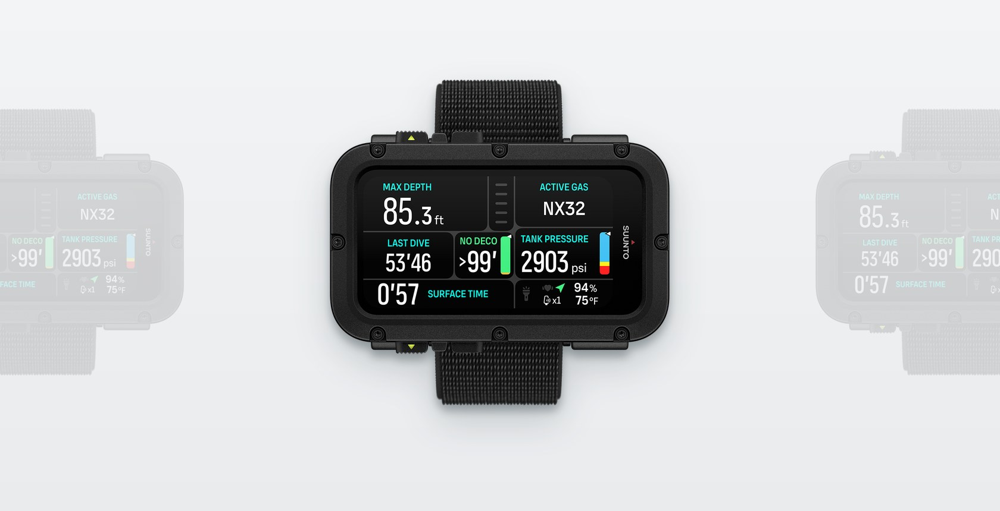

What makes it good?
The Nautic is Suunto's dedicated big-screen dive computer: a 3.26 in AMOLED panel in a 101 x 60 mm glass-fibre reinforced polyamide case, depth-rated to 200 m and driven by four buttons that work with 8 mm gloves. It runs Bühlmann ZHL-16C with adjustable gradient factors and covers multi-gas, trimix and sidemount with dual tank-pressure readouts from Suunto Tank PODs. Battery life is the headline number — up to 120 hours of diving at medium brightness — and dive-tested reviews report the claim holding across multi-day trips with days off between charges. GPS logs entry and exit points and tracks the route so the Suunto app can replay the dive in 3D, and a small LED flashlight is built into the case. The trade-off is bulk: 232 g with strap, and it is a dive instrument, not something you keep on at dinner. At $699 it costs less than half of Garmin's Descent X50i in the same big-screen class, though divers wanting a longer-proven tech platform still lean Shearwater. For anyone prioritizing legibility and battery life over watch styling, the spec-per-dollar case is strong.
Where it wins
- The 3.26 in AMOLED is the brightest, crispest screen in its price bracket, and the four-button menu works with 8 mm gloves
- 120 hours of dive time at medium brightness (80 hours at full) — dive-tested reviews confirm multi-day trips on one charge
- Bühlmann ZHL-16C with adjustable gradient factors, trimix, GF99/SurfGF readouts and sidemount dual tank-pressure display at $699
- GPS marks entry and exit points and tracks the underwater route; the Suunto app replays the dive in 3D
- 200 m depth rating plus a built-in LED flashlight for reading gauges in dark water
Where it falls short
- It is big: 232 g and a 101 mm case that sits like a console on smaller wrists — divers coming from watch-sized computers report an adjustment period
- At $699 buyers cross-shop the Shearwater Peregrine TX, and the Nautic platform is new; CCR support was promised via a post-launch firmware update rather than shipping in the box
Specs
- Display
- 3.26-inch AMOLED, 720 x 382 px
- Algorithm
- Buhlmann 16 GF (ZHL-16C based) with gradient factors
- Air integration
- Suunto Tank POD wireless (sold separately), dual-tank sidemount display
- Battery
- Rechargeable, up to 120 h diving at medium brightness
- Depth rating
- 100 m
- Modes
- Single-gas, multi-gas (trimix), sidemount, gauge
- Extras
- Surface GPS with route tracking, integrated LED flashlight
- Weight
- 232 g with strap
- Case size
- 101 x 60 x 23.7 mm
- Case material
- Glass-fibre reinforced polyamide
- Lens
- Sapphire touchscreen
- Strap options
- Bungee cord, elastic textile, or TPU with stainless steel buckle (kits swap between them)
Also in this guide
- Shearwater Peregrine from $495
- Garmin Descent Mk3i from $1199.99
- Shearwater Perdix 2 from $1255
- Suunto Ocean from $678.99